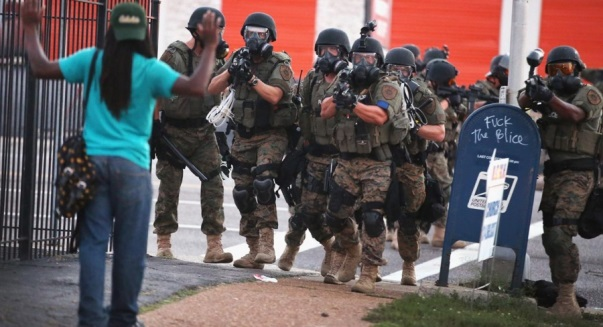

2014-10-20 11:05:00
我的上一篇文章似乎对读者是个大惊奇，所以我在此再多给一些例子，以证明我所言不虚。还记得今年八月间在圣路易（St. Louis）的郊区Ferguson，因为一名警察（叫Darren Wilson）打死一个手无寸铁的年轻黑人（叫Michael Brown）而引起的暴动吗？当地民眾会暴动，就是因为第一，他们知道那个警察不会有什么法律责任；其次，这类事件几乎每个礼拜都发生，当地人受够了。让我们来复习一下整个事件的细节。
今年八月Ferguson示威期间，传遍全球的一张照片，高举双手的只是一个过路人，全副武装的不是军队，而是当地的警察。请注意这些警察虽然拿的是军用的突撃步枪，却没有受过真正的军事训练。真正的军人在手无寸铁的百姓前，枪口必须朝天，手指离开板机，以免枪枝走火，误伤无辜。不过“无辜百姓”这个观念，美国警察显然是没有的。所以那个邮箱上的涂鸦写的是“Fuck The Police”。
被害者的同行朋友说那个警察要从警车出来时，车门撞上了Michael Brown，心里不爽，从车窗里抓住Brown，两者挣扎了一阵，Wilson掏枪射撃了Brown，Brown转身逃命，Wilson下车追杀，在Brown的背后开了枪后，Brown敢紧回头，举手投降，Wilson乘机拿枪狂射，Brown被爆头。法医检验的结果，的确是Brown身中六枪，致命伤在头上。而且所有的目撃者都同意，Brown最后中枪丧命时，两手是举起来的。Wilson自己的故事是Brown故意把车门顶回去，然后钻过车窗来抢他的枪（说嫌犯企图抢枪是美国警察杀人后的标准答案），不过Wilson没办法解释Brown最后为什么是死于十几公尺外的爆头伤。现在两个多月过去了，示威的热情已经消散，整个事件眼看着又要不了了之。
如果读者还觉得这是特例，或者Brown可能死有应得，那请你到youtube去看看这个全程被录下来的警察杀人事件：https://www.youtube.com/watch?v=6ta2-7QJM78&bpctr=1413819672。这个死者叫Kajieme Powell，他有精神病，在Brown死后一个多礼拜的几公里外的地方，拿着一把很小的小刀在街头大喊大叫。路人并不觉得受了威胁，只觉得他很奇怪；但是警察一到，几秒锺后就开枪把他打死了。这次开枪连警方内部都不须要调查，更不用麻烦检察官了；这是因为死者明显地手执“武器”，所以警察开枪是理所当然的。事后警方说Kajieme Powell事件是“Suicide By Police”，也就是“用警察自杀”。这不是一个新名词，在美国，这是一个大家都知道的概念：在警察面前持刀，就是自杀。好玩的是，美国的法律规定，帮助别人自杀是等同杀人罪的。不过美国的法律和税收一様，只针对小老百姓；警察是维持社会秩序和统治阶级特权的重要工具，当然不受限制了。
补充一点，youtube上的那段录影是路人录的，但是是当地警方发布的。在美国对执勤警察录影是有危险的，尤其是当警察开枪时，你的录影器材一定会被没收，你的脸上也可能会奇妙地出现瘀青。这个路人的手机就是被警方没收，经检查认定没有问题后才公开发布。美国法律当然是说百姓的安全和财產有保障，可是警察高于法律，最后还是他们说了算。好玩的是，警方认为这段录影对他们的形象是很正面的描述，所以才会急着公布。你们能想像负面的描述是什么様的吗？
如果你以为只有黑人会被警察莫名其妙地枪杀，请看看这个案例：http://www.huffingtonpost.com/2013/11/07/tyler-comstock-shot-dead-police-iowa-state-university_n_4234039.html。2013年十一月4日，一个19岁的白人和爸爸在爱荷华（Iowa）州的家里吵了一架，开着自家的车子气冲冲地走了。他的爸爸一气之下叫了警察，说他的儿子“偷”了他的车。警察追逐那个同様手无寸铁的年轻人到附近的大学校园里，年轻人坐在车里就是不肯出来，于是警察也是一様火力全开，把他当场乱枪撃毙。事后警方同様地连内部调查都不需要，因为死者是偷车的现行犯，警察高兴开枪就可以开枪。